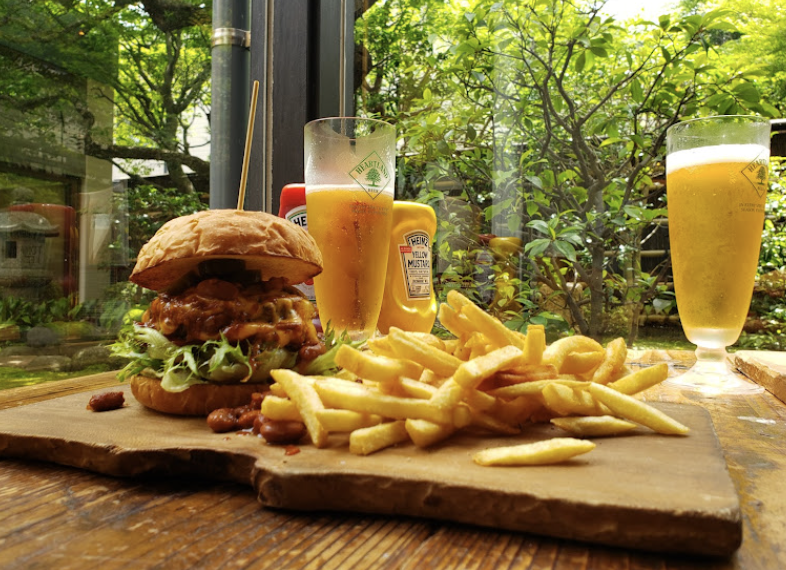
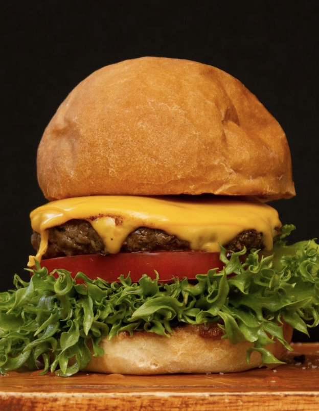
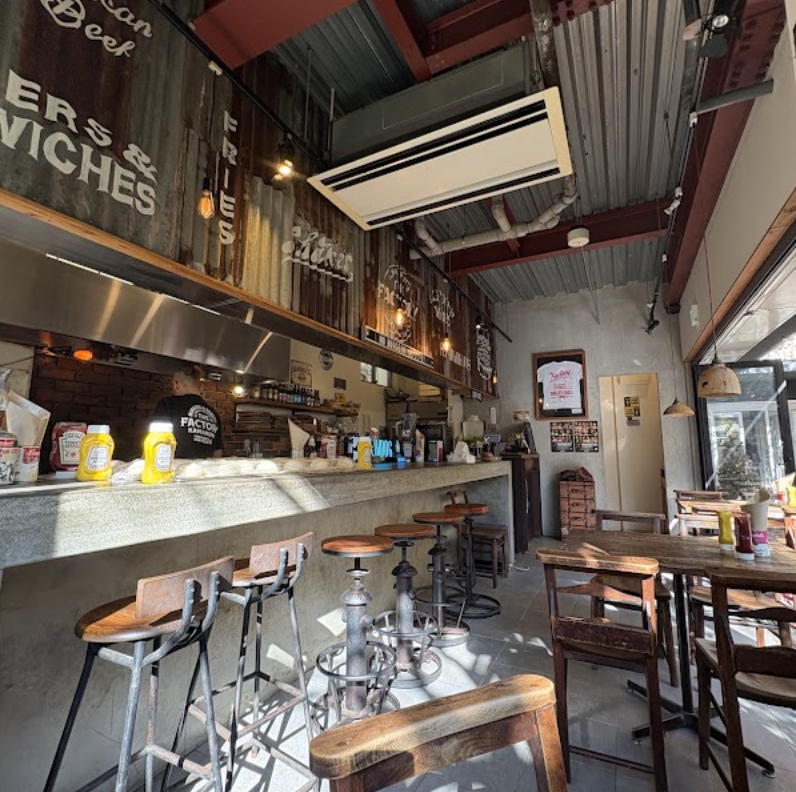
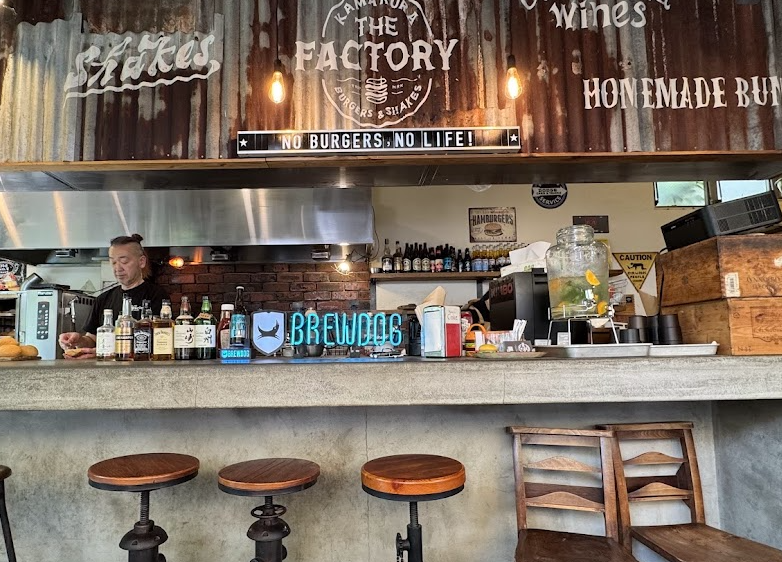
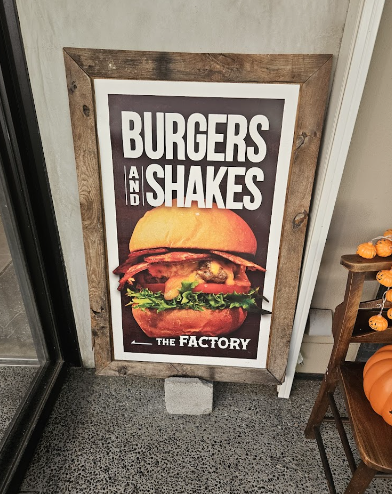

国産和牛100%パティ
肉の旨みを活かすため、味わいはまっすぐに。ジューシーで食べ応えのあるパティが主役です。

Kamakura burgers and shakes
国産和牛100%パティ、鎌倉野菜、手作り感のあるバンズ。 小町通りから少し入った落ち着いた空間で、肉肉しいハンバーガーを。
Our burger
肉の旨みを活かすため、味わいはまっすぐに。ジューシーで食べ応えのあるパティが主役です。
みずみずしい野菜の食感と香りを重ね、重厚な和牛の味わいを軽やかに引き立てます。
にぎわいから少し離れた、木とコンクリートの落ち着いた空間。テラス席はペット同伴可能です。

Signature
噛むほどに旨みが広がるパティに、存在感のあるバンズとフレッシュな野菜。 余計な飾りではなく、素材の重なりで満足感をつくります。
Atmosphere
カウンター、テーブル席、窓辺の席。ランチはもちろん、散策の途中でひと息つく時間にも似合う空間です。 角の席から見える中庭の緑は、レビューでも印象に残るポイント。



Voices
とても肉肉しい、ボリューミーで美味しい大満足なハンバーガーでした。
ベーコンチーズバーガーと照り焼きチキンを注文。セットでポテトとドリンクも。
角の席は中庭の緑に囲まれ、深呼吸したくなるような癒やしの空間。
Access